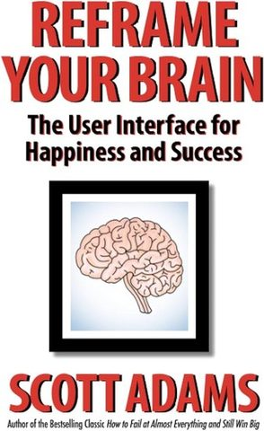

"
Currently Reading
2 books
Reading now
Ruinstorm
David Annandale — The Horus Heresy #46
Imperium Secundus has failed. Sanguinius, Guilliman and the Lion take their fleets into the Ruinstorm itself — a daemonic warpstorm that has cut the galaxy in half — to find their way back to Terra. Book 11 of 18 on my minimalist Heresy path.

Reading now
American Kingpin
Nick Bilton
The hunt for Ross Ulbricht and the rise and fall of Silk Road — the dark-web marketplace that ran on Bitcoin before most people knew what Bitcoin was. Reads like a thriller, doubles as early crypto history.
Timeless Recommendations
30 books
The Art of ResilienceRoss Edgley
Edgley swam around Great Britain — 157 days at sea, tongue disintegrating from salt — and somehow that's only a third of what this book is. It's an adventure story, a sports science textbook and a motivational manifesto rolled into one, going far beyond the usual hustle porn. The rare book that educates your body and hardens your mind at the same time.

Reframe Your BrainScott Adams
An all-time classic from Scott. Hundreds of reframes — small swaps of perspective that change how a situation feels and what you do about it. It's a user manual for your own head, written by the guy who treats the brain as programmable hardware. One of those books you keep within arm's reach forever.

The Book of ElonEric Jorgenson
Jorgenson does for Musk what he did for Naval — distills millions of words into the essential mindset: first-principles thinking, The Algorithm, mission selection at planetary scale. If you've followed Elon for years there won't be much that's genuinely new, but as a clean distillation of what makes the greatest entrepreneur of all time tick, it's excellent.

The Sovereign IndividualDavidson & Rees-Mogg
Written in 1997 and reads like it was written last year. Davidson and Rees-Mogg traced exactly how digital networks would erode the nation-state's monopoly on violence and taxation — and why crypto was inevitable. Every page feels like receiving classified intelligence about the world you're already living in.

Fooled by RandomnessNassim Taleb
Taleb methodically dismantles the stories we tell about success. Most of what looks like skill is luck that survived — and the people rewarded most are often the ones who got lucky first. Kills your hero worship and gives you a much more honest model for evaluating yourself and others.

12 Rules for LifeJordan Peterson
Peterson takes mythology, clinical psychology, and a lot of uncomfortable observations about human nature and turns them into rules you can actually use. Dense in places, but the payoff is real — a framework for living with intention rather than just reacting. Changed how I think about responsibility.

Win BiglyScott Adams
Adams called Trump's win in August 2015 using persuasion theory alone and documented the whole thing in real time. The book is a masterclass in how humans actually make decisions — spoiler: not rationally. You'll never watch a political campaign, ad, or negotiation the same way again.

How to Fail at Almost Everything and Still Win BigScott Adams
Goals are for losers — systems are how you actually win. Adams failed at almost everything before Dilbert, and this book is his honest post-mortem on what actually worked. The systems-over-goals framework alone is worth the read; the rest is bonus self-awareness you didn't know you needed.

EndureCameron Hanes
Hanes is a regular guy who decided to outwork everyone. He wakes up at 3am, trains twice a day, works a full-time job, and has done it for decades. The book is repetitive — it's basically motivation porn — but sometimes that's exactly what you need to stop making excuses.

The Unaccountability MachineDan Davies
Ever wonder why every company and government seems to produce disasters nobody wanted? Davies explains it through cybernetics — the science of control systems. Organisations are accountability machines that break in predictable ways. Turns your frustration with institutions into something closer to clarity.

Never Split the DifferenceChris Voss
Forget win-win. Voss spent decades negotiating hostage situations and the core lesson is that emotions run every deal. Tactical empathy, mirroring, calibrated questions — tools that feel almost unfair once you've internalised them. Immediately useful in salary talks, client calls, or any conversation with stakes.

PrinciplesRay Dalio
Dalio built Bridgewater into the world's largest hedge fund by treating every failure as data and writing down what he learned. This book is the manual he extracted from that process. Systematic, sometimes cold, but the idea that you can codify how to make better decisions is genuinely powerful.

AlchemyRory Sutherland
Sutherland spent 30 years at Ogilvy watching irrational solutions outperform rational ones. A slower train feels faster with better Wi-Fi. A cheaper drug feels less effective. Logic optimises the wrong variable constantly. This book rewires how you think about value creation — and makes you a far more effective problem solver.

God's DebrisScott Adams
A 90-minute thought experiment disguised as a novel. An old man with complete knowledge of the universe explains reality to a delivery guy. It sounds silly — it's not. Read it once and your certainty about almost everything softens. Only worth it if you're already a fan of how Adams thinks.

Total RecallArnold Schwarzenegger
Arnold is one of the most bizarre success stories in human history — bodybuilding champion, action movie legend, Governor of California — all by the same method: decide what you want, become obsessed, ignore everyone who says no. The book is entertaining and quietly devastating to any excuse you're holding onto.

Elon MuskAshlee Vance
Before the Twitter circus, Musk was just building rockets from scratch because Boeing was too expensive. Vance's biography captures the earlier, purer version of that obsession. You close it recalibrating what "ambitious" means — and quietly uncomfortable with your own standards.

Can't Hurt MeDavid Goggins
Goggins grew up in poverty and abuse, was overweight and failing, and became one of the most elite endurance athletes alive through sheer refusal to stop. Uncomfortable to read because he removes every excuse methodically. The 40% rule alone — that when your mind says stop you're only 40% done — is worth the whole book.

Run or DieKilian Jornet
Jornet runs up mountains the way most people walk to their car. The book is part memoir, part meditation on movement — what happens to your mind when you push your body past every rational boundary. Beautiful writing from someone who lives in a different relationship with physical limits than the rest of us.

The Way of the FightGeorges St-Pierre
GSP is one of the most dominant athletes in MMA history and this book explains the mindset behind it. Fear as fuel, obsessive preparation, the permanent student mentality. More philosophy than sport — but grounded in real competition where the cost of getting it wrong is getting your face rearranged.

The Wim Hof MethodWim Hof
Wim Hof convinced scientists he could voluntarily control his immune response and core temperature — then taught others to do it too. The method is simple: breathwork, cold exposure, commitment. Ten minutes a day and you'll feel the difference within a week. One of those books where the practice matters more than the reading.

What Doesn't Kill UsScott Carney
Carney went in as a sceptic and ended up climbing Kilimanjaro in shorts. More journalistic than Hof's own book — he digs into the science and pushes back where it's shaky. Good companion read to the Wim Hof Method if you want the evidence alongside the practice.

The Daily StoicRyan Holiday
A page a day from Marcus Aurelius, Seneca, and Epictetus, curated and translated into something you can actually use. The Stoics had a surprisingly modern answer to anxiety: focus only on what you control, accept everything else. Sounds simple, practice it and discover how little you actually do that.

The Almanack of Naval RavikantEric Jorgenson
Naval thinks about wealth and happiness more precisely than almost anyone I've read. Jorgenson distils his best ideas — specific knowledge, leverage, the difference between getting rich and staying happy — into a clean, fast read. The kind of book you return to because something new hits differently each time.

The Network StateBalaji Srinivasan
Balaji's thesis: you can build a country the way you build a startup. Start with an online community, develop shared culture and currency, eventually acquire territory. Ambitious and strange and increasingly hard to dismiss. Whether it happens or not, the framework makes you think differently about sovereignty.

Extreme OwnershipJocko Willink & Leif Babin
Two Navy SEALs from Ramadi strip leadership down to one principle: own everything. Not as a motivational poster but as a practical operating system tested where the cost of failure was death. The lesson that lands hardest — there are no bad teams, only bad leaders — is almost impossible to argue with.

Bad BloodJohn Carreyrou
Elizabeth Holmes built a $9 billion company on a medical device that didn't work and convinced some of the most powerful people in America to back her. Carreyrou breaks down every layer of the fraud. Reads like a thriller but the lessons about charisma, groupthink, and due diligence are completely real.

Hillbilly ElegyJ.D. Vance
Vance grew up in a world most commentators only study from a distance. The violence, the addiction, the pride, the self-sabotage — all of it is rendered from the inside without judgment or excuse-making. Essential reading for understanding why so many people in America feel like the system is designed against them.

Read Write OwnChris Dixon
Dixon maps the internet's history through who controls the protocols — and the pattern is always the same: openness to attract users, then extraction once they're locked in. Blockchains change the ownership structure at the protocol level. Best articulation I've read for why web3 matters beyond the speculation.

The Technological RepublicAlexander Karp
Karp makes an uncomfortable argument: liberal democracies that refuse to build weapons and surveillance infrastructure are choosing decline. Coming from the Palantir CEO it's not abstract — he's built it. Provocative, intentionally so, and more honest about the tradeoffs of power than most books in this space.

The New American Road Trip MixtapeBrendan Leonard
Leonard quit his job, bought a van, and drove across America with no plan and very little money. Funny, honest, and genuinely moving in places — the kind of book that makes you resent your calendar and crave open road. Read it if you've ever thought about doing something stupid and beautiful and kept talking yourself out of it.
Pipeline
Plan to read
ChaosTom O'Neill

The Beginning of InfinityDavid Deutsch

The Bitcoin StandardSaifedean Ammous

Capitalism and FreedomMilton Friedman

Atlas ShruggedAyn Rand

LoserthinkScott Adams

AntifragileNassim Taleb

The Black SwanNassim Taleb

Skin in the GameNassim Taleb

No Domain: The John McAfee TapesMark Eglinton

Inventing FreedomDaniel Hannan

The Art of Not Being GovernedJames C. Scott

Seeing Like a StateJames C. Scott

WaldenHenry David Thoreau

Infinite JestDavid Foster Wallace

The BookAlan Watts

BreatheRickson Gracie

Comfort in DarknessRickson Gracie

The CryptopiansLaura Shin

Proof of StakeVitalik Buterin
Bold Conjectures
Bold Conjectures, Vol. ILogan Chipkin
The Horus Heresy
The Minimalist Path
cd8d's minimalist order — 18 main-arc books (incl. optional Fulgrim), then the 8-book Siege of Terra
- Read
- Reading
- Unread
- Optional